CLAUDE’S PICK
Claude 1M 컨텍스트 — AI 맥락창 한계와 작동 원리
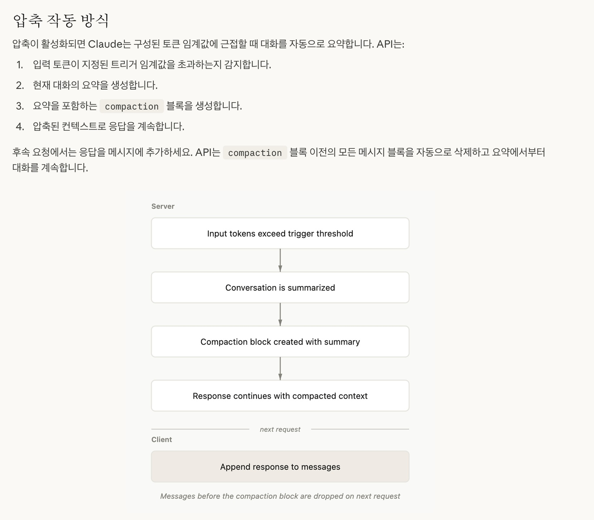
AI와의 대화가 길어질수록 응답 품질이 저하되는 원인은 Context Window의 용량 한계에 있다. Context Window는 AI가 한 번에 처리할 수 있는 정보의 총량으로, 대화 내역과 파일이 누적될수록 선형적으로 소진된다. Claude Opus 4.6과 Sonnet 4.6은 컨텍스트 한도를 기존 200K에서 100만 토큰으로 5배 확장 출시하여, 장기 대화 및 대규모 파일 처리 시의 품질 저하 문제를 완화했다.
핵심 포인트: 핵심 성과: Claude Opus 4.6과 Sonnet 4.6의 컨텍스트 한도가 기존 200K에서 100만 토큰으로 5배 확장되었으며, 1토큰은 한국어 약 1글자에 해당해 책 다섯 권 분량의 정보를 단일 요청에 처리 가능하다.
논문 (Papers)
Claude Code: Anthropic 스킬 실전 활용 9유형
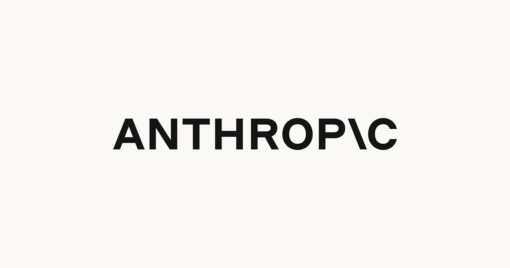
Claude Code의 스킬 확장 포인트를 효과적으로 활용하는 방법이 불명확한 가운데, Anthropic 엔지니어 Thariq이 사내 수백 개 실전 운용 경험을 공개했다. 스킬이 단순 마크다운 파일이 아닌 스크립트와 데이터를 포함하는 폴더 구조임을 밝히고, 라이브러리 레퍼런스부터 온보딩까지 9가지 유형으로 분류한 뒤 팀 내 확산 전략을 제시한다.
핵심 포인트: 핵심 기여: Anthropic 사내 수백 개 실전 스킬을 전수 조사해 9가지 유형으로 체계화하고, 스킬을 마크다운 파일이 아닌 폴더 구조로 설계하는 원칙과 팀 확산 전략을 공개했다.
🔗 anthropic.com/engineering/claude-code-ski…
기타 (Others)
Be My Butler: 12단계 멀티에이전트 파이프라인
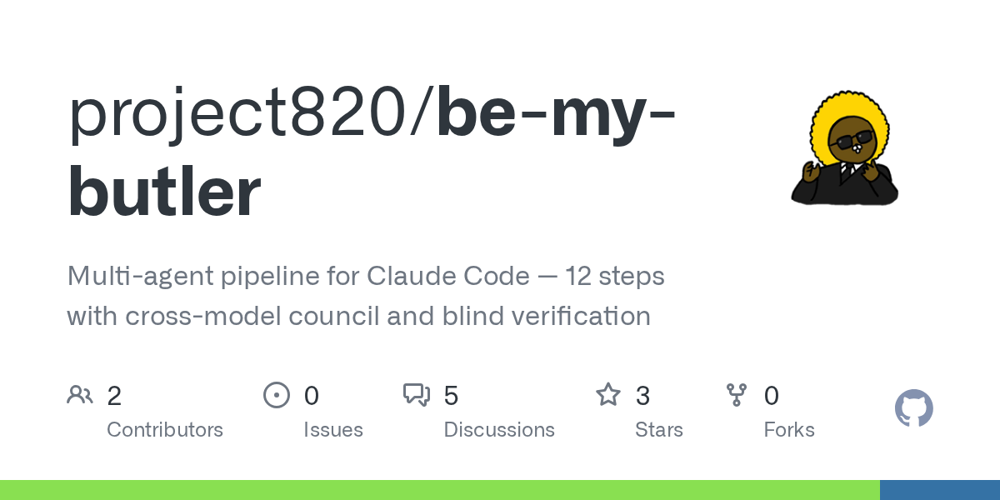
Claude Code로 복잡한 작업을 수행할 때 단계별 검증 없이 실행하면 오류가 누적되고 결과의 신뢰성이 낮아지는 문제가 발생한다. Be My Butler(BMB)는 12단계 멀티에이전트 파이프라인으로 이를 해결하며, 크로스모델 협의와 블라인드 검증 메커니즘을 통해 초보자부터 전문가까지 누구나 Claude Code 작업을 체계적으로 수행할 수 있도록 지원하는 오픈소스 프로젝트다.
핵심 포인트: 핵심 기여: 12단계 구조화 파이프라인에 크로스모델 협의(cross-model council)와 블라인드 검증(blind verification) 메커니즘을 결합해 Claude Code 실행 품질과 신뢰성을 체계적으로 보장한다.
🔗 github.com/project820/be-my-butler
GitHub
AI & RESEARCH
Mamba-3: 이산화·복소수 기법으로 SSM 성능 도약
트랜스포머 대비 연산 효율이 높은 선형 SSM 계열 모델은 상태 추적 능력의 구조적 한계로 복잡한 시퀀스 태스크에서 약점을 드러내왔다. Mamba-3는 기존 SSM 구조에 컨볼루션 연산을 모방하는 이산화 방식과 복소수 기반 상태 전환 기법을 결합해 이 문제를 해결한다. 상태 추적 능력을 대폭 개선하면서도 선형 모델 고유의 고속 추론 이점을 유지하며, Mamba-2를 포함한 기존 선형 모델들을 모든 파라미터 규모에서 능가한다.
핵심 포인트: 핵심 성과: 컨볼루션 모방 이산화와 복소수 상태 전환 도입으로 SSM의 고질적 약점인 상태 추적 능력을 개선하고, 언어 모델링·검색 태스크 전 체급에서 Mamba-2 대비 우위를 달성하면서 선형 추론 속도는 그대로 유지.
🔗 tridao.me/blog/2026/mamba3-part1/
기타 (Others)
RLCF: 인용 피드백으로 과학적 논문 가치 판단 학습
AI가 실험 보조나 문헌 검색을 넘어 연구 아이디어 자체의 영향력을 판단하는 능력이 요구되어 왔다. Fudan University는 RLCF 프레임워크로 논문 인용수 데이터를 학습해 Scientific Judge와 Scientific Thinker 모델을 개발했다. Scientific Judge는 과학 커뮤니티의 장기 평가 기준을 체득해 소형 체급으로도 GPT-5.2와 Gemini 3 Pro의 판단력을 능가했으며, Scientific Thinker는 이를 바탕으로 성공 가능성 높은 후속 연구를 자동 제안한다.
핵심 포인트: 핵심 성과: Scientific Judge 모델이 소형 체급으로 GPT-5.2와 Gemini 3 Pro를 능가하는 논문 영향력 판단을 달성했으며, RLCF로 훈련된 Scientific Thinker는 인용 기반 평가를 토대로 고영향력 후속 연구 아이디어를 자동 생성한다.
🔗 tongjingqi.github.io/AI-Can-Learn-Scienti…
기타 (Others)
Attention Residuals: 선택적 잔차 연결로 LLM 아키텍처 혁신
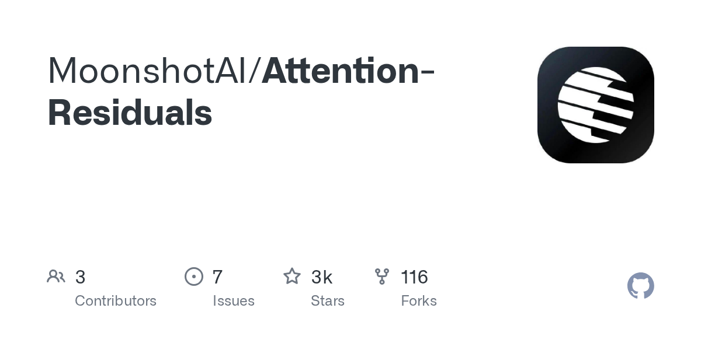
트랜스포머 기반 신경망의 고정된 잔차 연결(Residual Connection)은 과거 레이어 정보를 무조건 합산해 은닉 상태 비대화 및 정보 희석 문제를 유발한다. Moonshot AI의 Kimi 팀은 현재 입력값에 따라 필요한 과거 정보만 선택적으로 참조하는 Attention Residuals 기법을 제안해 이를 해결한다. 대규모 확장 적용을 위한 Block AttnRes 기법도 함께 도입되었다.
핵심 포인트: 핵심 성과: 48B 파라미터 모델 기준 추론 지연 2% 미만으로 억제하면서 연산 효율 1.25배 향상 달성.
🔗 github.com/MoonshotAI/Attention-Residuals…
GitHub
Neural Thickets: 가중치 흔들기만으로 LLM 전문화

LLM 파인튜닝에서 PPO·GRPO 같은 복잡한 강화학습이 필수라는 인식과 달리, MIT 연구팀은 가중치를 무작위로 미세 섭동하는 것만으로도 유사한 성능 향상이 가능함을 제시했다. 7B 이상 대형 모델의 사전학습 가중치 주변에는 이미 다양한 도메인 전문가 설정이 밀집해 존재하며, 이를 무작위 탐색으로 선별하면 수학·코딩 벤치마크 성능이 크게 향상된다. GPU 병렬 처리 기반으로 최적화 과정이 3분 이내에 완료된다.
핵심 포인트: 핵심 성과: PPO·GRPO 없이 가중치 무작위 섭동 후 최선 선택만으로 수학·코딩 성능 향상 달성. GPU 병렬 처리 기반 최적화 3분 완료, 7B 이상 모델에서 사전학습 가중치 주변 전문가 설정 밀집도(Neural Thicket) 현상 실증.
논문 (Papers)
UW
AI 시장을 뒤흔들 엄청난 논문이 나왔다. UW Allen School과 Stanford 연구진이 70개가 넘는 주요 언어모델을 같은 열린 질문으로 비교했더니, 놀라울 만큼 비슷한 답을 내놓았다는 논문이 발표되었다.
논문 (Papers)
프롬프트 체이닝: LLM 단일 프롬프트 한계 극복 설계 패턴
단일 LLM 프롬프트로 복잡한 작업을 처리할 때 발생하는 정확도 저하와 오류 누적 문제를 해결하는 기법. 여러 프롬프트를 순차적으로 연결하여 복잡한 작업을 단계별로 분해하고, 각 단계의 출력이 다음 입력으로 이어지는 구조를 통해 최종 결과물의 신뢰성을 높인다. 순차·병렬·조건 분기 등 주요 설계 패턴과 활용 사례, 체이닝 적용 판단 기준을 함께 다룬다.
핵심 포인트: 핵심 기여: 단일 프롬프트 대비 체이닝의 정확도 향상 원리를 설명하고, 순차·병렬·조건 분기 등 설계 패턴 및 복잡한 작업 분해 전략을 활용 사례와 함께 체계적으로 제시한다.
🔗 codedeck.kr/card-news/08fb3bdc-118d-4d35…
기타 (Others)
MiroFish-Ko: LLM 기반 사회 현상 예측 시뮬레이터
소셜 시뮬레이션은 복잡한 사회 현상을 수치화하고 미래를 예측하는 분야이지만, 기존 방법론은 비정형 문서 데이터를 체계적으로 활용하기 어려웠다. MiroFish-Ko는 문서 데이터를 온톨로지로 변환하고 LLM 엔진으로 시뮬레이션하여 미래 결과를 예측하는 오픈소스 소셜 AI 프레임워크로, 중국에서 화제가 된 MiroFish의 한국어판이다.
핵심 포인트: 핵심 기여: 문서→온톨로지→LLM 시뮬레이션→미래 예측의 3단계 파이프라인을 통해 사회 현상을 정량적으로 예측하며, 기존 MiroFish를 한국어 환경에 맞게 이식한 오픈소스 프로젝트다.
🔗 linkedin.com/posts/byeongki-jeong-4568381…
기타 (Others)
DEVTOOLS & OPEN SOURCE
OpenGranola: macOS 로컬 오픈소스 회의 비서
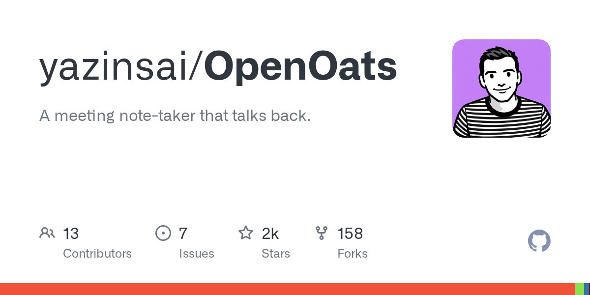
유료 회의 AI 비서 서비스는 외부 서버 의존에 따른 프라이버시 위험과 구독 비용 부담이 존재한다. OpenGranola는 macOS에서 오디오를 기기 내부에서 처리해 화면 공유 중에도 상대방에게 노출되지 않으며, 마크다운 노트 폴더를 연동해 회의 흐름에 맞는 과거 메모와 대화 주제를 실시간으로 제안한다.
핵심 포인트: 핵심 성과: 로컬 오디오 처리로 화면 공유 중 비노출 보장, 마크다운 노트 폴더 연동으로 실시간 컨텍스트 검색 지원, 저렴한 LLM API 직접 연결 방식으로 특정 벤더 종속 없이 구동 가능
🔗 github.com/yazinsai/OpenGranola
GitHub
Recordly — 자동 줌·커서 내장 오픈소스 화면 녹화기
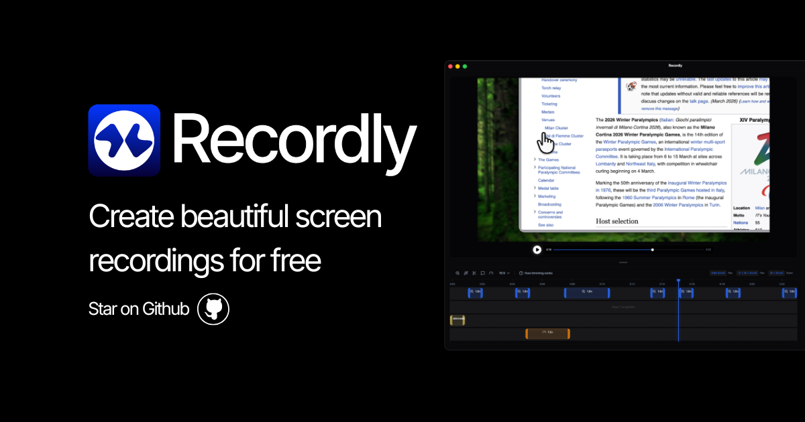
화면 녹화 결과물이 비전문적으로 보이거나 녹화·편집을 따로 진행해야 하는 불편을 해결하는 오픈소스 도구. Recordly는 자동 줌, 커서 바운스, 부드러운 이동 등 모션 애니메이션을 내장해 별도 후편집 없이도 전문적인 데모 영상을 생성한다. 녹화 종료 후 즉시 편집기로 전환되며 줌 구간, 속도, 주석 편집과 MP4·GIF 내보내기를 지원한다.
핵심 포인트: 핵심 기여: 자동 줌, 커서 바운스, 부드러운 커서 이동 등 Screen Studio 수준의 애니메이션 효과를 오픈소스로 제공하며, 녹화 직후 즉시 편집기로 전환되어 MP4·GIF 원스텝 제작이 가능하다.
🔗 github.com/webadderall/Recordly?tab=readm…
GitHub
ouroboros
랄프톤 우승자 하네스에서 영감을 받아 제작하셨다고 합니다. AI 에게 “앱 만들어줘”라고 하면 뭔가 나옵니다. 그런데 원하던 게 아닙니다. 고치라고 하면 다른 곳이 깨집니다. AI가 코드를 잘 짜는건 문제가 아닙니다.
GitHub
Unsloth Studio: 오픈소스 LLM 파인튜닝 웹 UI
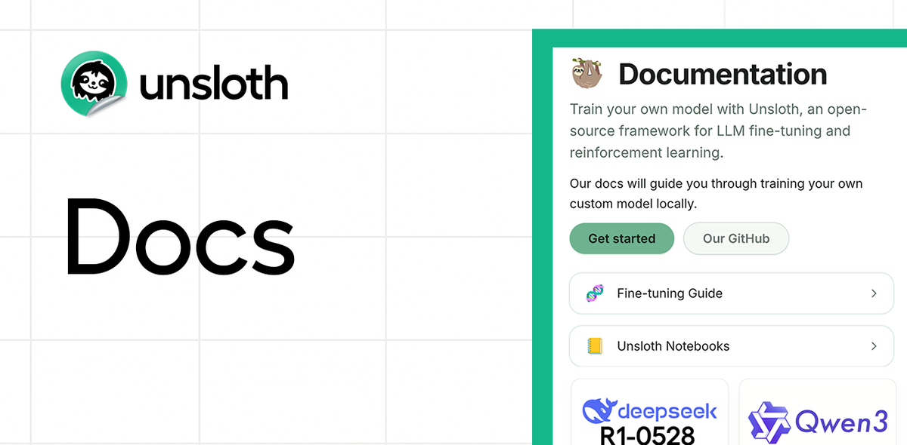
LLM 파인튜닝은 고가의 GPU 인프라와 복잡한 데이터 준비 과정으로 인해 개인 개발자의 진입이 어려웠다. Unsloth AI가 오픈소스 웹 UI Unsloth Studio를 공개하여 맥과 윈도우 환경에서 VRAM 사용량을 70% 절감하면서 훈련 속도를 2배 향상시켰다. PDF나 CSV 파일만 업로드하면 학습 데이터셋을 자동 생성해주어 별도의 파이프라인 구축 없이 로컬 환경에서 맞춤형 LLM 훈련이 가능하다.
핵심 포인트: 핵심 성과: VRAM 사용량 70% 절감과 훈련 속도 2배 향상을 달성하며, PDF/CSV 입력만으로 학습 데이터셋을 자동 생성하는 기능을 탑재해 별도 GPU 서버 없이 개인 로컬 환경에서 LLM 파인튜닝을 완결할 수 있다.
기타 (Others)
Claude Code 완전 가이드 — 한국어 실전 팁 70가지
Claude Code는 강력한 AI 코딩 도구이지만 효과적인 활용 방법을 체계적으로 정리한 한국어 레퍼런스가 부족하다. 이 PDF 가이드는 총 54페이지에 걸쳐 Claude Code 실전 활용을 위한 70가지 팁을 한국어로 정리한 자료로, 기본 사용법부터 고급 활용 전략까지 개발자가 현업에서 즉시 적용 가능한 내용을 체계적으로 다룬다.
핵심 포인트: 핵심 성과: 54페이지 분량의 한국어 PDF로 Claude Code 실전 팁 70가지를 집약했으며, LinkedIn에서 좋아요 1,600개, 리포스트 626회를 기록하며 개발자 커뮤니티에서 높은 반응을 얻었다.
🔗 drive.google.com/file/d/1fV_OTeqPB4m9J7gK…
기타 (Others)
tldraw: LLM과 도식으로 소통하는 Claude 스킬
LLM과 텍스트만으로 소통하는 한계를 극복하기 위해, tldraw-desktop-skill은 tldraw 데스크톱 앱과 Claude Code를 연동하는 스킬을 제공한다. npx를 통해 전역 설치 후 /tldraw-desktop 명령으로 활성화하면, 현재 아키텍처 도식 생성 요청이나 도형 수정 후 구조 검토 등 시각적 도식 기반의 AI 협업이 가능해진다.
핵심 포인트: 핵심 기여: tldraw 데스크톱과 Claude Code를 스킬 하나로 연동해 /tldraw-desktop 명령으로 아키텍처 시각화 및 도식 기반 피드백 루프를 구현, 텍스트 중심 AI 협업을 시각적 인터페이스로 확장한다.
🔗 linkedin.com/posts/승현-정-376842221_llm-과-그…
기타 (Others)
OpenBrand — 웹사이트 URL로 브랜드 에셋 자동 추출
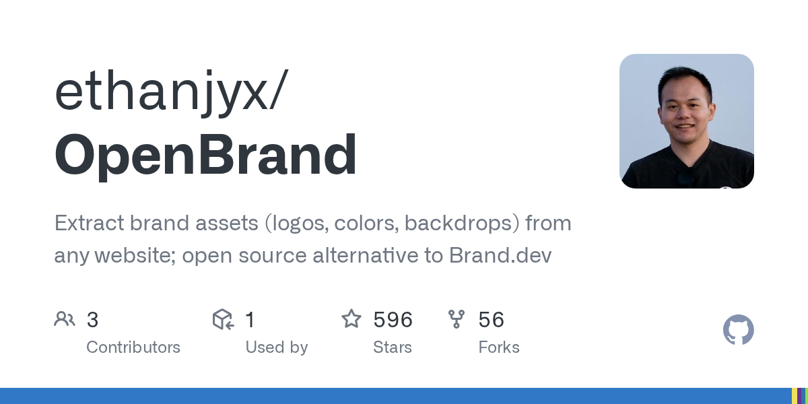
브랜드 에셋 수집은 통상 사이트 방문 후 로고 저장, 색상 추출, 명칭 정리 등 여러 단계를 거쳐야 하는 반복 작업이다. OpenBrand는 웹사이트 URL만 입력하면 로고, 브랜드 컬러, 배경 이미지, 브랜드명을 자동 추출하는 오픈소스 서비스로, 웹 인터페이스·API·npm 패키지·MCP 서버를 지원해 Claude Code, Cursor 같은 개발 환경에서도 통합 활용이 가능하다.
핵심 포인트: 핵심 기여: URL 단일 입력으로 브랜드 에셋 일괄 추출을 실현하며, Brand.dev의 오픈소스 대안으로 웹·API·npm·MCP 서버 등 4가지 연동 방식을 제공하고 무료 API 키를 지원한다.
🔗 github.com/ethanjyx/openbrand?media_id=38…
GitHub
hwp2md — HWP 문서를 Markdown으로 변환하는 CLI 도구
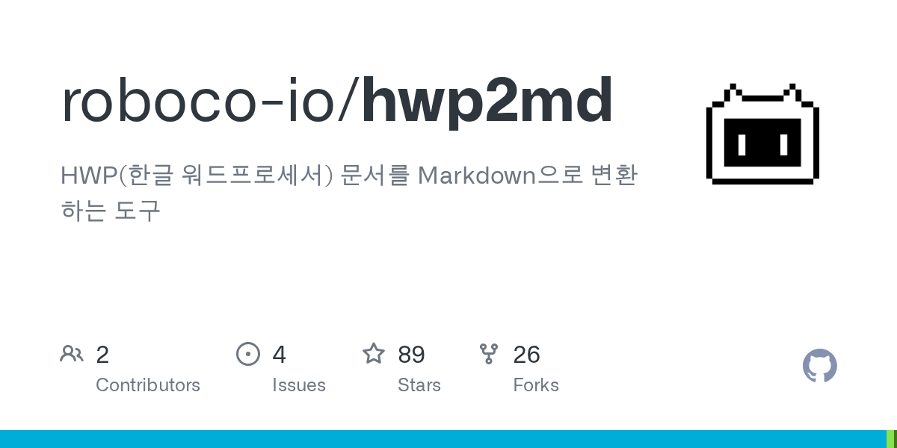
한국 공공기관·기업 환경에서 광범위하게 사용되는 HWP 파일은 Git, Notion 등 현대 협업 도구와 호환되지 않아 문서 마이그레이션에 걸림돌이 되어왔다. hwp2md는 HWPX 및 HWP 5.x(2002~2022) 형식을 Markdown으로 변환하는 Go 기반 로컬 CLI 도구로, 표와 구조를 보존하면서 로컬 또는 클라우드 LLM을 연동해 가독성 높은 포맷으로 자동 정리한다. 로컬 실행 방식이라 사내망 및 보안 정책 환경에서도 사용 가능하며 CI/CD 파이프라인과 대량 문서 마이그레이션에 바로 투입할 수 있다.
핵심 포인트: 핵심 기여: HWPX·HWP 5.x 전 버전 지원, 로컬 CLI 기반으로 보안 이슈 해결, 파서 후단에 로컬/클라우드 LLM 스위칭 연동으로 자동 포맷팅 기능 제공.
GitHub
claude-plugins-official — Anthropic 공식 Claude Code 플러그인 저장소

Claude Code를 단순 코드 보조 도구로만 활용할 때 외부 시스템 연동과 실무 자동화에 한계가 있다. Anthropic이 직접 관리하는 공식 플러그인 저장소 claude-plugins-official은 MCP(Model Context Protocol) 표준을 따르는 고품질 플러그인을 제공해 웹 검색, 파일 시스템 조작, SQL 실행 등 개발 워크플로우 전반을 자동화하고 실무 데이터를 직접 다루는 코딩 에이전트 구축을 지원한다.
핵심 포인트: 핵심 기여: Anthropic이 직접 관리하는 MCP 표준 기반 공식 저장소로, 웹 검색·SQL 실행·파일 시스템 조작 등 실무 연동 플러그인을 단일 소스에서 제공해 단순 챗봇 수준의 Claude Code를 실무형 코딩 에이전트로 즉시 전환 가능하게 한다.
🔗 github.com/anthropics/claude-plugins-offi…
GitHub
Claude Code: 에이전트 코딩 생산성 높이는 공식 플러그인 5종
Claude Code는 기본 내장 기능만으로는 복잡한 개발 작업의 생산성 향상에 한계가 있다. Anthropic 공식 마켓의 5종 플러그인은 각각 브레인스토밍·디버깅(superpowers), 최신 공식 문서 실시간 참조(context7), CLAUDE.md 정책 관리(claude-md-management), IDE 수준의 코드 참조 분석(언어별 LSP), 체계적 기능 개발 플로우(feature-dev)를 제공해 에이전트의 개발 능력을 종합적으로 확장한다.
핵심 포인트: 핵심 기여: context7은 현재 버전 공식 문서를 실시간 참조해 구현 오류를 방지하고, 언어별 LSP는 텍스트 검색 대신 실제 코드 참조 기반 분석으로 IDE 수준의 변수·함수 추적 및 수정 기능을 제공한다.
🔗 threads.com/@jeongph.dev/post/DV3jLRcDw8S…
기타 (Others)
claude-md-improver — CLAUDE.md 코드베이스 기반 자동 갱신 도구
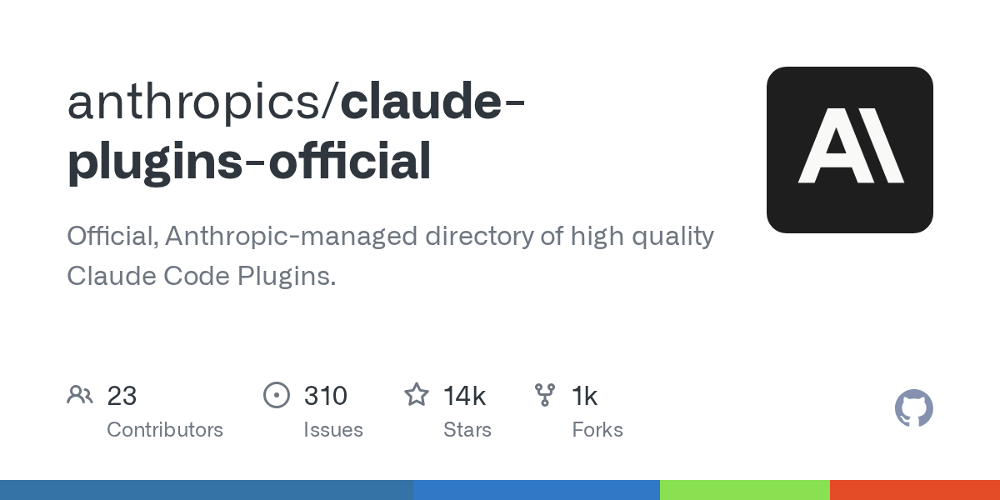
코드베이스가 변경되어도 CLAUDE.md가 방치되면 AI의 작업 문맥이 어긋나 결과 품질이 저하된다. claude-md-improver는 이 문제를 해결하는 개발 워크플로우 도구로, claude-md-improver 스킬로 현재 코드베이스 기준 문서 품질을 진단하고, revise-claude-md 명령으로 해당 작업 세션의 학습 내용을 CLAUDE.md에 즉시 반영한다. 프로젝트 메모리를 한 번 작성 후 방치되는 문서가 아닌, 코드 변경과 작업 이력을 지속적으로 추적하는 동적 기억으로 전환한다.
핵심 포인트: 핵심 기여: claude-md-improver 스킬의 코드베이스 진단과 revise-claude-md 명령의 세션 학습 반영 기능을 결합하여, 수동 업데이트 없이 CLAUDE.md를 코드 현황과 동기화된 상태로 유지한다.
🔗 github.com/anthropics/claude-plugins-offi…
GitHub
claude-code-best-practice — 실전 치트시트
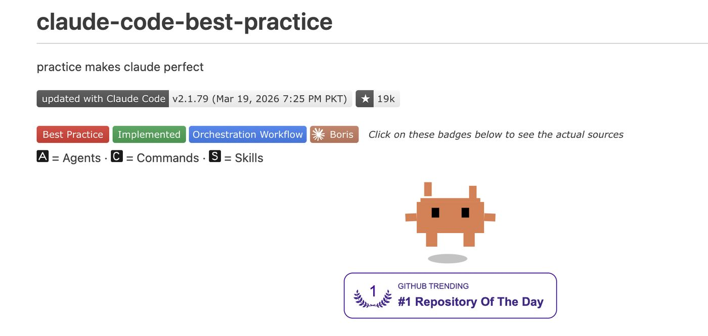
AI 코딩 툴 사용 시 결과가 일관되지 않는 원인은 체계적인 활용 방법 부재다. claude-code-best-practice는 Claude Code 중심의 실전형 가이드로, 에이전트·스킬·워크플로우·디버깅 팁을 한곳에 정리한다. plan mode 진입 흐름부터 command·agent·skill 구조까지 단계별로 설명하며, 단순 기능 소개가 아닌 실제 활용 방식을 중심으로 구성되어 있다.
핵심 포인트: 핵심 기여: plan mode 기반 실행 흐름, command→agent→skill 3단계 구조 정리, 실전 디버깅 팁 수록으로 Claude Code 활용 완성도를 높이는 오픈소스 치트시트.
🔗 github.com/shanraisshan/claude-code-best…
GitHub
OpenVizAI: AI로 최적 차트 자동 선택하는 시각화 툴
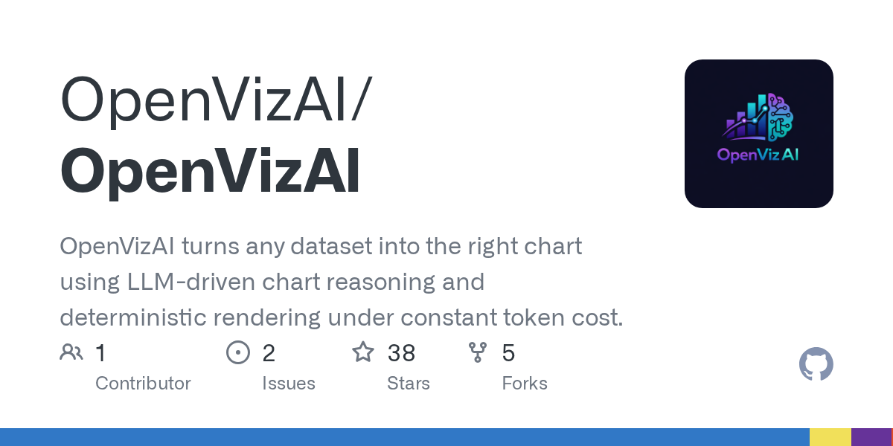
데이터 시각화 작업에서 어떤 차트 유형을 선택할지 사람이 직접 판단해야 하는 문제와, 기존 AI 도구들이 전체 JSON 데이터를 LLM에 입력해 토큰 소비가 크고 신뢰성이 낮은 한계가 있다. OpenVizAI는 LLM은 차트 방향 판단에만 사용하고 실제 계산과 렌더링은 코드가 처리하는 방식으로, 데이터 크기와 무관하게 일정한 토큰 비용으로 정확한 시각화를 생성한다.
핵심 포인트: 핵심 기여: LLM은 차트 유형 추론만 담당하고 실제 렌더링은 결정론적 코드가 수행해 데이터 크기와 무관한 일정 토큰 비용을 실현하며, 비교·추세 같은 자연어 명령만으로 차트 방향을 자동 결정한다.
🔗 github.com/OpenVizAI/OpenVizAI
GitHub
Snapzy: macOS 메뉴바 기반 올인원 캡처 도구
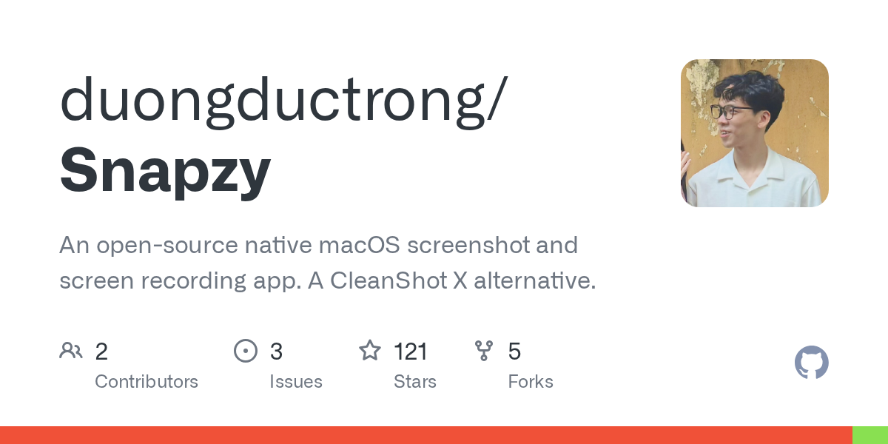
화면 캡처, OCR, 영상 녹화를 위해 여러 앱을 전환해야 하는 번거로움을 해결하는 macOS 전용 오픈소스 도구. 메뉴바에서 단축키로 즉시 실행되며, 전체/영역 캡처, OCR 텍스트 추출, 영상·GIF 녹화, 주석·블러·크롭·배경 목업 편집까지 단일 워크플로우로 처리한다. 시스템 오디오와 마이크 동시 녹음도 지원해 튜토리얼 제작에 적합하며, CleanShot X의 오픈소스 대안으로 macOS 13 이상에서 무료 소스 빌드가 가능하다.
핵심 포인트: 핵심 성과: 캡처·OCR·편집·녹화를 단일 메뉴바 앱으로 통합하여 다중 앱 전환 없이 연속 워크플로우를 구현하며, GitHub 오픈소스로 무료 소스 빌드 지원.
🔗 github.com/duongductrong/Snapzy
GitHub
claude-health: Claude Code 설정 진단 스킬
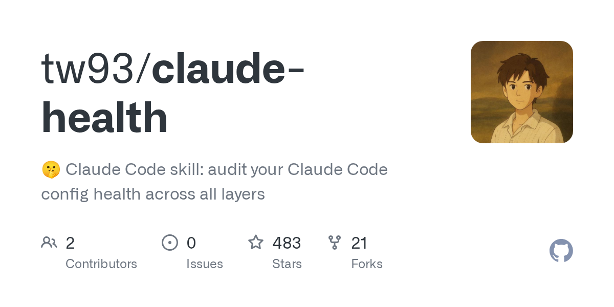
Claude Code를 챗봇처럼 사용하면 컨텍스트 오염과 성능 저하가 발생하며, 도구를 많이 붙일수록 결과가 나빠지는 역설이 생긴다. 오픈소스 개발자 Tw93은 반년간의 실사용 경험을 바탕으로 에이전트 루프 구조와 5개 Surface 진단 체계를 분석하고, /health 명령 하나로 설정 부실 항목을 자동 점검하는 claude-health 스킬을 공개했다.
핵심 포인트: 핵심 기여: Tw93이 Claude Code의 에이전트 루프(컨텍스트 수집→행동→검증→재수집) 구조와 Context·Action·Control 등 5개 Surface 진단 체계를 문서화하고, /health 단일 명령으로 설정 부실 항목을 자동 점검하는 claude-health 스킬을 공개했다.
🔗 github.com/tw93/claude-health
GitHub
Milvus — 수십억 벡터 초고속 검색 오픈소스 DB
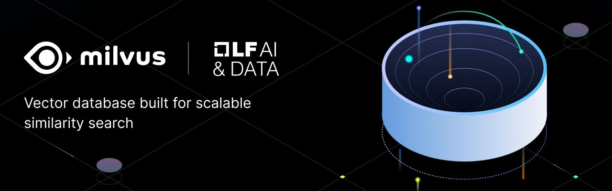
대규모 AI 애플리케이션에서 수십억 개의 벡터 데이터를 효율적으로 검색하는 것은 기존 데이터베이스로 처리하기 어려운 과제다. Milvus는 다중 인덱싱 알고리즘과 하이브리드 검색을 지원하는 클라우드 네이티브 오픈소스 벡터 데이터베이스로, RAG 시스템을 포함한 AI 애플리케이션의 벡터 유사도 검색을 고성능으로 처리한다.
핵심 포인트: 핵심 성과: GitHub 스타 43.3K를 기록한 오픈소스 프로젝트로, 수십억 개의 벡터에 대한 ANN 검색을 지원하며 다중 인덱싱 알고리즘과 하이브리드 검색으로 RAG 시스템 구축의 핵심 인프라로 활용된다.
GitHub
옥토터미널 — 간트차트 내장 개인 맞춤형 터미널 도구
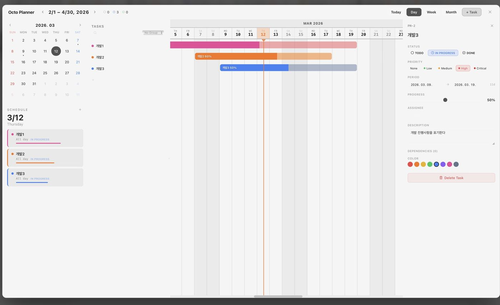
개발자 도구에서 프로젝트 일정 관리와 터미널 워크플로우를 함께 처리하려면 별도 앱 전환이 불가피했다. 옥토터미널 개발자는 직접 간절히 필요했던 간트차트 기능을 터미널에 통합해 이 문제를 해결했다. 자신이 필요한 기능을 직접 구현하는 방식으로 제작된 이 도구는 외부 앱 없이 터미널 내에서 프로젝트 타임라인을 시각화할 수 있게 한다.
핵심 포인트: 핵심 기여: 터미널 환경에 간트차트 뷰를 직접 통합하여 별도 도구 전환 없이 프로젝트 일정 시각화가 가능하며, 개발자 본인의 실제 필요에서 출발한 기능으로 실용성을 확보했다.
🔗 threads.com/@keke_appa/post/DVyJ703kgye?x…
기타 (Others)
OpenRAG — RAG 파이프라인 3요소 통합 올인원 플랫폼
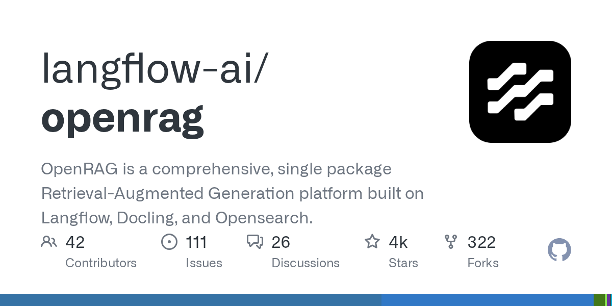
RAG 파이프라인 구축에는 문서 처리, 검색 인덱싱, 워크플로우 구성 도구를 각각 설치하고 연동해야 하는 복잡한 초기 설정이 따른다. OpenRAG는 Langflow, Docling, OpenSearch를 단일 패키지로 통합하여 세 가지 핵심 컴포넌트를 별도 설정 없이 즉시 활용할 수 있는 올인원 RAG 플랫폼을 제공한다.
핵심 포인트: 핵심 기여: Langflow(워크플로우 구성), Docling(문서 처리), OpenSearch(검색 인덱싱)를 단일 패키지로 묶어 별도 연동 작업 없이 RAG 프로토타입을 즉시 구동할 수 있다.
🔗 github.com/langflow-ai/openrag
GitHub
Edit Banana — 이미지·PDF를 편집 가능 파일로 변환하는 툴
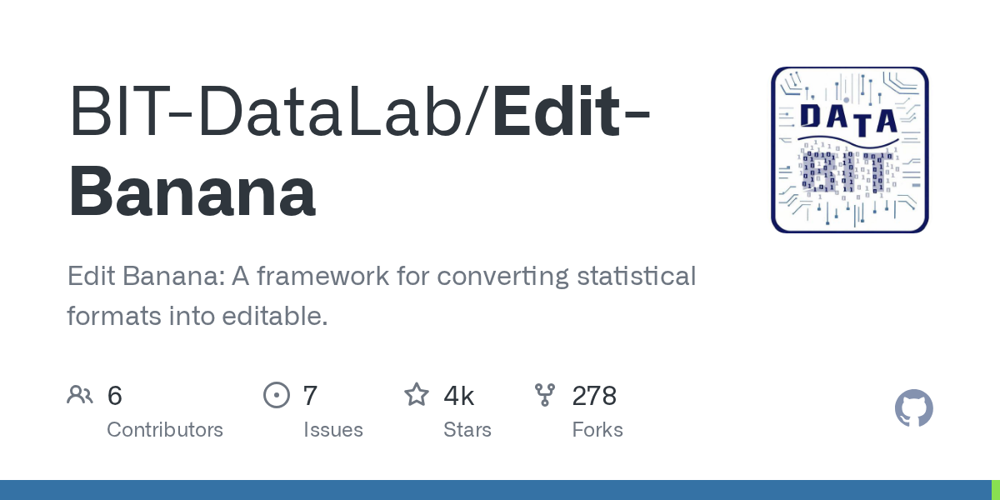
이미지나 PDF로 공유된 다이어그램은 구조 수정이 불가능해 팀 문서와 발표 자료 편집 시 처음부터 다시 그려야 하는 비효율이 발생한다. Edit Banana는 PNG·JPG·PDF 파일을 업로드하면 도형·화살표·색감·레이아웃 구조를 최대한 보존한 채 DrawIO나 PPTX 등 편집 가능한 형식으로 변환해준다. 텍스트와 수식 인식 기능도 갖춰 변환 후 문구 수정과 후처리가 용이하며, 웹 기반으로 가입 시 무료 크레딧 10개를 제공한다.
핵심 포인트: 핵심 성과: 도형·화살표·색감·레이아웃을 원본 구조에 가깝게 복원하고, 텍스트와 수식 인식 후 즉시 수정 가능한 DrawIO·PPTX 파일로 출력해 기존 수작업 재현 대비 편집 시간을 대폭 단축한다.
🔗 github.com/BIT-DataLab/Edit-Banana?media…
GitHub
doc-parser: 비정형 문서 파싱과 AI 요약 생성 도구
PDF의 복잡한 테이블과 이미지, Excel 병합 셀, PowerPoint 다이어그램 등 비정형 데이터를 정확히 파싱하지 못하면 RAG 시스템의 품질이 근본적으로 제한된다. doc-parser는 Amazon Bedrock Document Parser를 활용해 PDF·XLSX·PPTX·DOCX에서 텍스트, 표, 이미지를 구조화된 형태로 추출하고 AI 기반 요약을 자동 생성해 전처리 과정을 자동화한다.
핵심 포인트: 핵심 기여: Amazon Bedrock Document Parser 기반으로 PDF·XLSX·PPTX·DOCX 4종 포맷을 지원하며, 비정형 문서의 텍스트·표·이미지를 일괄 추출해 RAG 파이프라인 전처리 과정을 완전 자동화한다.
🔗 linkedin.com/posts/daekeun-kim_rag-docume…
기타 (Others)
XYCut: PDF 비정형 테이블 JSON 변환 파이프라인
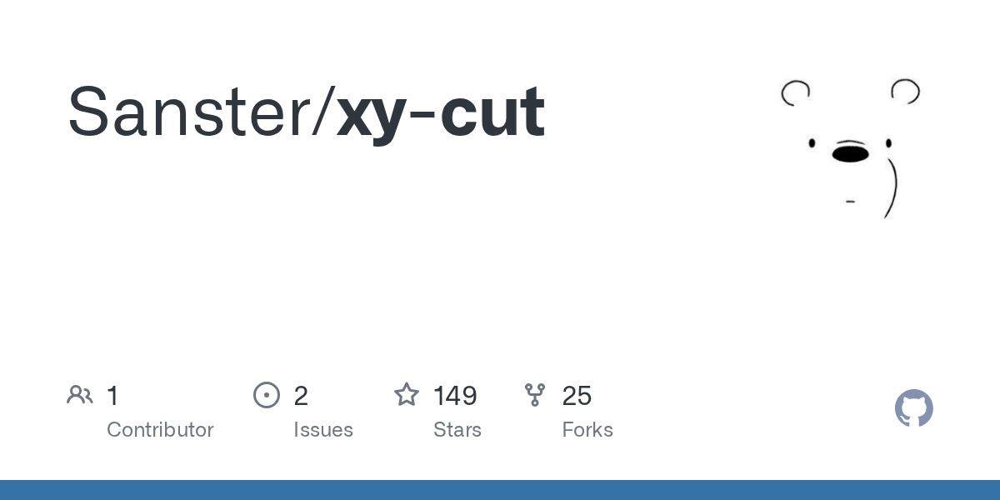
수천 페이지의 비정형 PDF에서 테이블 데이터를 추출할 때 LLM에 PDF를 직접 업로드하면 누락 데이터가 다수 발생하는 문제가 있다. 이를 해결하기 위해 XYCut 알고리즘 기반 OCR로 PDF를 전처리한 뒤 구조화된 JSON 형태로 변환하고 프롬프팅으로 데이터를 추출하는 파이프라인을 구성하면, 복잡한 테이블과 비정형 레이아웃이 포함된 문서에서도 누락 없는 완전한 데이터 추출이 가능해진다.
핵심 포인트: 핵심 성과: 오픈소스 2~3개를 조합한 XYCut OCR 전처리 기반 PDF-to-JSON 변환 파이프라인으로, 비정형 레이아웃과 복잡한 테이블이 포함된 수천 페이지 PDF에서 누락 없는 완전한 데이터 추출을 실현한다.
GitHub
ENGINEERING
Vertex AI vs GKE: 구글 AI 파인튜닝 선택 가이드
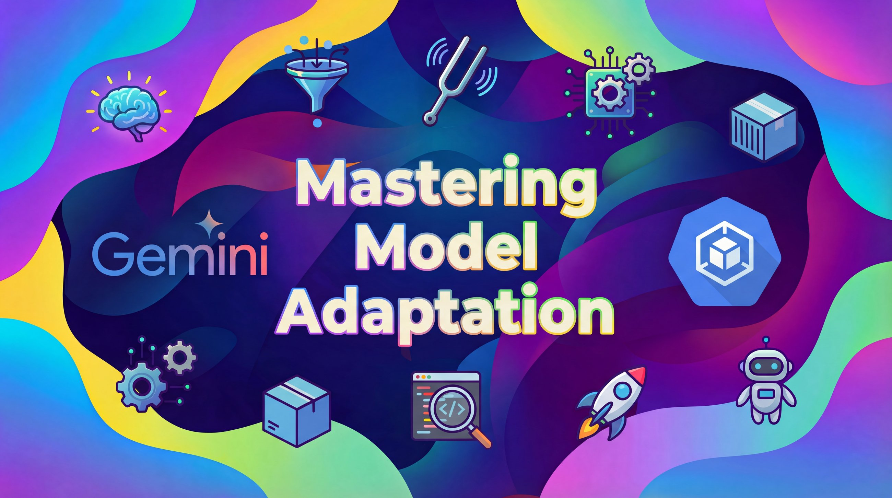
프로덕션 환경에서 AI 모델이 브랜드 스타일이나 특정 포맷에 일관성 있게 응답하지 못하는 문제를 해결하기 위해 파인튜닝이 필요하다. 구글 클라우드는 두 가지 접근 방식을 제공한다. Vertex AI는 관리형 환경으로 Gemini를 빠르게 파인튜닝할 수 있는 반면, GKE는 라마 같은 오픈소스 모델을 완전히 커스텀 설정으로 운영할 수 있다. 구글은 두 방식을 모두 체험할 수 있는 실습 랩을 공개했다.
핵심 포인트: 핵심 기여: Vertex AI는 관리형 환경으로 Gemini 파인튜닝의 속도와 편의성을 제공하고, GKE는 오픈소스 모델의 100% 커스텀 제어를 지원한다. 두 방식을 직접 비교하는 구글 클라우드 공식 실습 랩이 공개되어 팀 상황에 맞는 선택이 가능해졌다.
기타 (Others)
PRODUCT & INDUSTRY
Claude Dispatch: 스마트폰으로 원격 AI 업무 파견
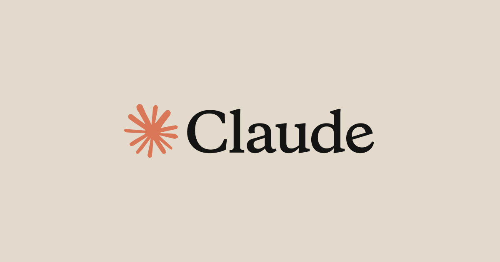
AI 에이전트를 활용하려면 데스크톱 앞에 상주해야 하는 물리적 제약이 존재한다. Claude Cowork의 신규 기능 Dispatch는 스마트폰에서 데스크톱 Claude에게 작업을 파견하고, 자리를 비운 뒤 돌아와 완성된 결과물을 수령하는 비동기 원격 실행 구조를 도입한다. 폴더 기반 작업, 스킬, 예약 실행과 결합해 AI를 일회성 질문 도구가 아닌 상시 가동형 업무 인프라로 전환한다.
핵심 포인트: 핵심 성과: Cowork 출시 2개월 만에 원격 파견 레이어를 추가했으며, Max 구독자부터 순차 배포 중이다. 로컬 실행과 모바일 원격 조종을 결합해 프라이버시를 유지하면서 비개발자 시장 확장을 본격화한다.
기타 (Others)
Claude 공인 아키텍트 — 파트너 전용 무료 AI 자격 인증
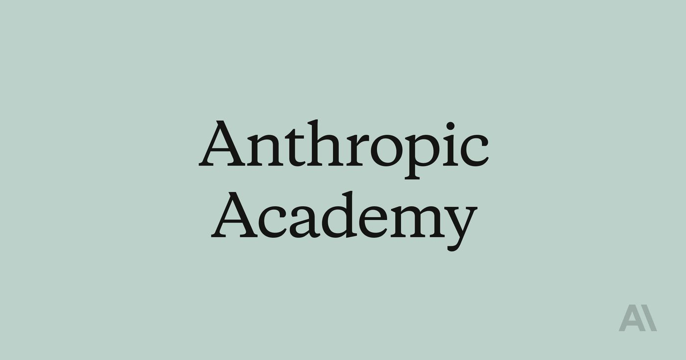
AI 에이전트 설계 실무 능력을 검증하는 공인 체계가 부재한 상황에서, Anthropic이 파트너사 실무자를 대상으로 Claude 공인 아키텍트 프로그램을 출시했다. 에이전트 아키텍처, MCP 통합, 프롬프트 엔지니어링 등 현업 핵심 기술을 다루는 60문항 120분 시험으로 구성되며, 조기 신청자 5,000명에게 무료로 제공되고 2영업일 내 섹션별 상세 성적표와 디지털 인증서가 발급된다.
핵심 포인트: 핵심 성과: 약 301 레벨의 응용 전문가 시험으로 에이전트 아키텍처·MCP 통합·프롬프트 엔지니어링 3개 실무 영역을 검증하며, 파트너사 최초 5,000명에게 무료 조기 접근을 제공한다.
🔗 anthropic.skilljar.com/claude-certified-a…
기타 (Others)
Claude: 대화 내 인터랙티브 차트 직접 생성 베타
기존 Artifacts 방식은 시각화를 대화 흐름과 분리된 별도 패널에 표시해 컨텍스트 전환이 발생하는 한계가 있었다. Anthropic은 Claude 신규 베타 기능으로 대화 흐름 안에서 인터랙티브 차트와 다이어그램을 직접 생성하는 방식을 도입했다. 사용자는 대화 중 값과 범위를 실시간으로 조작하며 데이터 분석 결과를 탐색할 수 있으며, 무료 플랜 포함 모든 요금제에서 베타 이용이 가능하다.
핵심 포인트: 핵심 성과: 기존 Artifacts 대비 대화 흐름 내 인터랙티브 시각화를 직접 생성하는 방식으로 전환하며, 무료 플랜 포함 전 플랜 베타 공개로 접근성을 확대했다.
🔗 threads.com/@choi.openai/post/DVzZZgCkT0l…
기타 (Others)
Ai-to-pptx: 주제만 입력하면 PPTX 초안까지 자동 생성
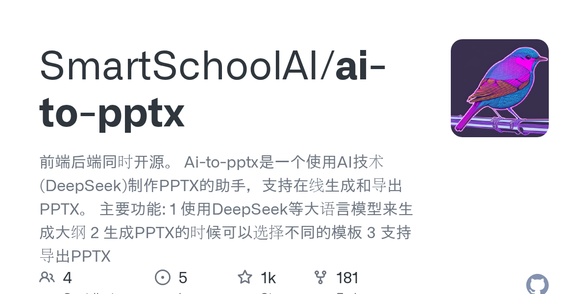
발표 자료 제작 시 기획 내용 작성과 슬라이드 디자인을 별도로 처리해야 하는 비효율이 존재한다. Ai-to-pptx는 주제 하나만 입력하면 DeepSeek 등의 LLM으로 목차를 구성하고 PPTX 초안까지 연속으로 생성해주는 웹 기반 서비스다. 생성된 내용의 텍스트, 스타일, 이미지 수정이 가능하고 로고와 배경 이미지로 브랜드 톤을 맞출 수 있다. 다양한 템플릿 선택과 커스텀 템플릿 공유 플랫폼도 제공하며 PPTX 파일 내보내기를 지원한다.
핵심 포인트: 핵심 성과: 주제 입력 한 번으로 LLM 목차 생성, 온라인 편집, 템플릿 적용, PPTX 내보내기까지 발표자료 제작 전 단계를 단일 워크플로우로 통합하며, 기존 ChatGPT 내용 작성 후 별도 PPT 작업이 필요했던 다단계 과정을 단축한다.
🔗 github.com/SmartSchoolAI/ai-to-pptx?tab=r…
GitHub
Ask Maps — 구글 지도에 Gemini를 탑재한 AI 검색
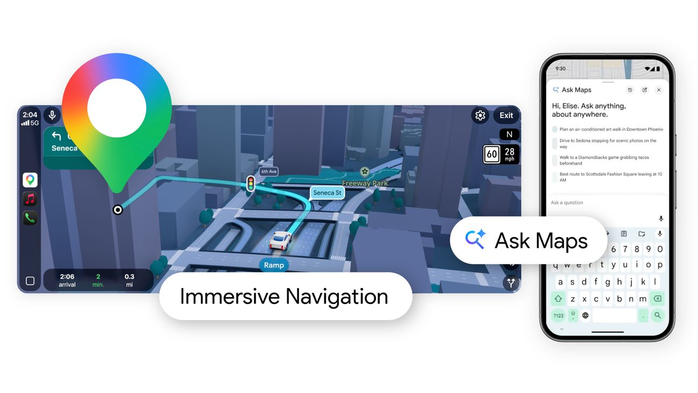
기존 지도 서비스는 단순 키워드 검색만 처리할 수 있어 대기줄 없는 충전소 탐색처럼 복잡한 맥락이 필요한 요구에 대응하지 못했다. 구글 맵은 Gemini를 탑재한 Ask Maps 기능으로 맥락 기반 질의에 맞춤형 답변을 제공하고, 몰입형 내비게이션으로 AI 기반 3D 공간 안내를 구현해 10년 만의 전면 개편을 완료했다.
핵심 포인트: 핵심 성과: Ask Maps는 Gemini 연동으로 복잡한 자연어 질의를 처리하며, 몰입형 내비게이션은 AI 3D 렌더링으로 기존 평면 지도 안내를 입체 공간 시각화 수준으로 끌어올렸다.
🔗 blog.google/products-and-platforms/produc…
블로그 (Blog)
Manus Skills — GitHub 검증 스킬 다운로드로 워크플로우 강화
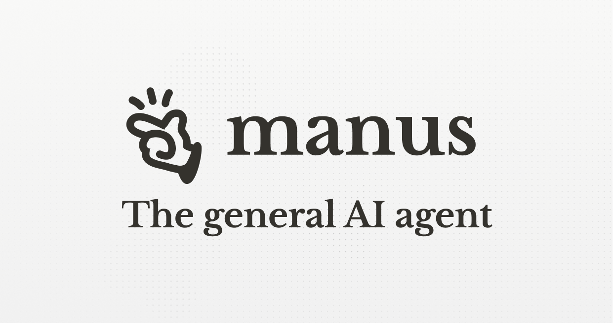
AI 에이전트에 필요한 스킬을 처음부터 개발하면 검증 비용과 구현 시간이 발생한다. Manus는 GitHub에 커뮤니티가 검증한 Skills를 공개 배포해 사용자가 완성된 기능을 워크플로우에 즉시 적용할 수 있도록 한다. 대화로 스킬을 생성하는 기존 방식에 더해 GitHub의 검증된 Skills를 자유롭게 다운로드하고 확장할 수 있어 에이전트 활용 범위가 넓어진다.
핵심 포인트: 핵심 성과: 대화 기반 스킬 생성 외에 GitHub 공개 저장소에서 커뮤니티 검증 Skills를 직접 다운로드해 워크플로우에 즉시 적용·확장 가능.
기타 (Others)